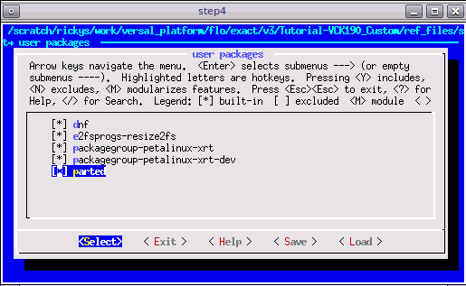
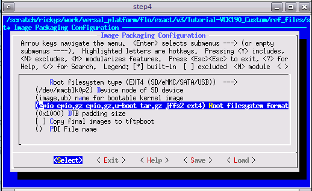

Versal Custom Platform Creation Tutorial |
Step 2: Create the Software Components with PetaLinux¶
In this step, we’ll create a PetaLinux project that includes Vitis Platform required components.
Create the PetaLinux Project¶
Setup PetaLinux environment:
source <petaLinux_tool_install_dir>/settings.shCreate PetaLinux Project with XSA we created in previous step
petalinux-create -t project --template versal --force -n petalinux cd petalinux petalinux-config --get-hw-description=<path to xsa directory> --silentconfig
The created PetaLinux project name is petalinux. Please feel free to change the PetaLinux project name with petalinux-create -n option.
Apply VCK190 device tree
Run
petalinux-configGo to DTG Settings
Enter versal-vck190-reva-x-ebm-02-reva for MACHINE_NAME option (Config option name is CONFIG_SUBSYSTEM_MACHINE_NAME)
Note: This preset device setting will add ethernet PHY info to device tree. The device tree source code will be applied to the PetaLinux project. If your VCK190 board version is different, please check the device tree source code directory whether it has a corresponding device tree version for your board and apply it in the PetaLinux project. You can clone the git repository, or use find file feature in github.

Customize Root File System, Kernel, Device Tree and U-boot¶
Add user packages by appending the CONFIG_x lines below to the <your_petalinux_project_dir>/project-spec/meta-user/conf/user-rootfsconfig file.
Note: This step is not a must but it makes it easier to find and select all required packages in next step.
Packages for base XRT support (required):
CONFIG_packagegroup-petalinux-xrt
XRT package group contains all the packages for Vitis acceleration runtime.
Packages for on-board acceleration application compiling support (optional):
CONFIG_packagegroup-petalinux-xrt-dev
package names with
-devsuffix means header files, dependency libraries and soft links required by compiling environment in Yocto.
Packages for easy system management (recommended):
CONFIG_dnf CONFIG_e2fsprogs-resize2fs CONFIG_parted CONFIG_auto-login
dnf is the package management tool
auto-login will login as root by default. It’s useful for development and debugging time. Please remove it at production phase.
parted and e2fsprogs-resize2fs can expand the ext4 partition to use the rest of the SD card.
Run
petalinux-config -c rootfsand select user packages, select name of rootfs all the libraries listed above, save and exit. If step1 is skipped, please use search function with/key to find these packages and enable them.
In rootfs config, go to Image Features and enable package-management and debug_tweaks option, store the change and exit. (Recommended)
Exit from user packages to root configuration window by select Exit and press Enter.
Select Image Features and enter.
Enable package-management and debug_tweaks by pressing space key. Sub items of package-management is not needed.
Exit
Exit
Save

Update the system-user device tree (required).
Append the following contents to the project-spec/meta-user/recipes-bsp/device-tree/files/system-user.dtsi file.
zyxclmm_drm node is required by zocl driver, which is a part of XRT.
axi_intc_0 node defines 32 interrupt inputs. This can not be inferred by the hardware settings in Vivado. So we have to add it here manually.
Note: an example file is provided in ref_files/step2_petalinux/project-spec/meta-user/recipes-bsp/device-tree/files/system-user.dtsi.
&amba { zyxclmm_drm { compatible = "xlnx,zocl-versal"; status = "okay"; interrupt-parent = <&axi_intc_0>; interrupts = <0 4>, <1 4>, <2 4>, <3 4>, <4 4>, <5 4>, <6 4>, <7 4>, <8 4>, <9 4>, <10 4>, <11 4>, <12 4>, <13 4>, <14 4>, <15 4>, <16 4>, <17 4>, <18 4>, <19 4>, <20 4>, <21 4>, <22 4>, <23 4>, <24 4>, <25 4>, <26 4>, <27 4>, <28 4>, <29 4>, <30 4>, <31 4>; }; }; &axi_intc_0 { xlnx,kind-of-intr = <0x0>; xlnx,num-intr-inputs = <0x20>; };
Add EXT4 rootfs support (Recommended)
PetaLinux uses initrd format for rootfs by default. This format extracts rootfs in DDR memory, which means it reduces the usable DDR memory for runtime and can’t retain the rootfs changes after reboot. To enable the root file system to retain changes, we’ll use EXT4 format for rootfs as the second partition on SD card while keep the first partition FAT32 to store other boot files.
Run
petalinux-config, go to Image Packaging Configuration, select Root File System Type as EXT4, and appendext4to Root File System Formats.

Update bootargs to use ext4 partition as root file system in system-user.dtsi:
/ { chosen { stdout-path = "serial0:115200"; bootargs = "console=ttyAMA0 earlycon=pl011,mmio32,0xFF000000,115200n8 clk_ignore_unused root=/dev/mmcblk1p2 rw rootwait rootfs=ext4"; }; };
Note:
root=/dev/mmcblk1p2is the rootfs path;rootfs=ext4defines the rootfs type. Please refer to the full system-user.dtsi in ref_files/step2_petalinux/system-user.dtsi.
Build PetaLinux Image¶
From any directory within the PetaLinux project, build the PetaLinux project.
petalinux-build
The generated u-boot and Linux images will be located in images/linux directory.
Build and install sysroot
petalinux-build --sdk
Sysroot sdk.sh will be generated in images/linux directory. We will extract it in next step.
Fast Track¶
Scripts are provided to re-create PetaLinux project and generate outputs. To use these scripts, please run the following steps.
Run build
# cd to the step directory, e.g. cd step2_petalinux make
To clean the generated files, please run
make clean
Note: Now HW platform and SW platform are all generated. Next we would package the Vitis Platform.
Copyright© 2020 Xilinx